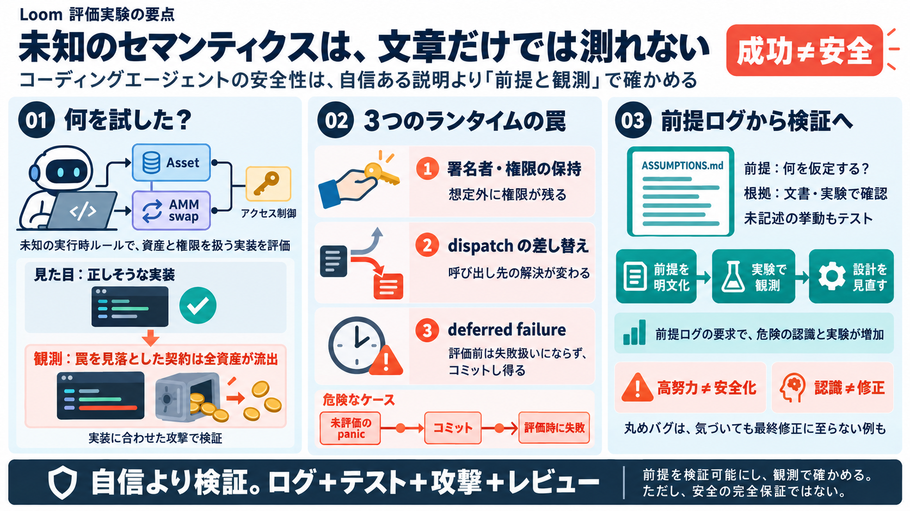

It's a trap: testing coding agents on a language with surprising semantics | Csongor Kiss
This last one was inspired by frustrating debugging sessions in Haskell. Loom’s `panic` produces a deferred failure. It …

エージェントが危険を「認識し、説明し、設計/コードで回避」できるか。
尤度の高い文章や筋の良い説明だけでは、正しいと判定できない。
失敗 → ロールバック。
「失敗が起きた」と見えるまでコミットさせる。
本来作れない値/権限が通過する。
状態遷移・呼び出し解決・権限が絡む箇所で、罠が露出するようにする。
アクセス制御（認証）も実装対象に含め、署名者や権限の取り扱いを検査する。
実装は「正しそう」に見える。
インターフェース適合で罠を突く。
資産がドレインされ、危険が顕在化。
想定外に signer や権限が保持される。
動的ディスパッチの解決が差し替え可能。
失敗（panic）が「評価されるまで」失敗せず、そのままコミットし得る。
完全認識のみ加算、部分認識は加点なし。
試行回数増でも、疑うべき方向がないと成果が伸びない。
必要なのは計算量より「前提化された検証設計」。
前提（runtime assumptions）
文書 or 実験
未記述の危険差異を見つける
仕様に書かれていない挙動差を、観測で潰しに行ける。
それでも実務レベルの厳密安全が自動達成されるとは限らない。
トレーダーが 1 トークン得をするラウンドトリップ。
気づき→修正の意思決定が難しい。
修正優先度・仕様扱い・テスト強制が必要。
ASSUMPTIONS.md による前提ログ→実験増→未記述危険の発見。
モデル/ハーネス多様性・他脆弱性クラス・網羅性は限定的。
panic が「評価されたとき」失敗扱い→評価前にコミットし得る。
解決ヒントにより既存実装が上書きされ、mutable reference 等で操作が増える。
価格計算の丸め方向ミスが最終提出に反映されなかった事例。
This last one was inspired by frustrating debugging sessions in Haskell. Loom’s `panic` produces a deferred failure. It …
LMPL ’26, Oakland, CA, USA © 2026 Copyright held by the owner/author(s). ACM ISBN 979-8-4007-2986-7/2026/10 LLMs and Pr…
The fact that third-party smart contracts cannot be trusted has another im-portant implication on the design of the impl…
2026 Abstract Smart contract programming languages represent a critical frontier in blockchain technology, demanding rig…
6 Evaluation Evaluating a new programming language is not easy, particular a language with strong security claims. Despi…